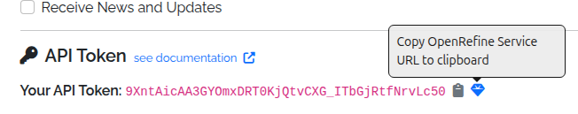

Technical¶
APIs (Application Programming Interfaces)¶
⚠️ Work in progress: The APIs are currently undergoing testing prior to public release.
The World Historical Gazetteer (WHG) provides two complementary APIs:
Entity API¶
Access canonical representations of our entities: Places, Datasets, Collections, Areas, and PeriodO Periods.
Retrieve full metadata, names, types, geometries, temporal bounds, authority info, and linked resources.
Machine-readable feature endpoints support Linked Places Format (LPF) for GIS and reconciliation tools.
Reconciliation Service API¶
Compatible with OpenRefine.
Supports both Place and PeriodO suggestions, batch reconciliation, and property enrichment.
Data Extension is supported, allowing users to enrich their tables with properties like Geometry, Alternative Names, Temporal Range, and Country Codes after reconciliation.
Documentation¶
Full, interactive documentation is available at https://whgazetteer.org/api/schema/swagger-ui/
API Tokens¶
Tokens are required for access to most WHG API endpoints.
⚠️ Work in progress: Tokens are not yet available. For now, the following describes only the intended functionality.
Registered users can generate an API token from their Profile page. Alongside the token, the Profile page also provides a preconfigured OpenRefine reconciliation service URL, which can be copied and pasted into OpenRefine’s reconciliation dialog, under “Add Standard Service”.

Using an API Token¶
The simplest way to use an API token is to include it as a query parameter in the request URL. For example:
https://whgazetteer.org/reconcile/?token=<token>
Otherwise, it may be included in the Authorization header, using the Bearer schema. Requests must also include a suitable
User-Agent to avoid bot-filters. For example:
curl -X POST https://whgazetteer.org/reconcile/ \
-H "Content-Type: application/json" \
-H "Authorization: Bearer <token>" \
-H "User-Agent: notbot" \
-d '{
"queries": {
"q1": {
"query": "London",
"mode": "fuzzy",
"fclasses": ["A","P"],
"start": 1200,
"end": 2050,
"undated": true,
"countries": ["GB","US"],
"bounds": {
"geometries": [{
"type": "Polygon",
"coordinates": [[
[-1.0,51.0],
[-1.0,52.0],
[0.5,52.0],
[0.5,51.0],
[-1.0,51.0]
]]
}]
}
}
}
}'
Code Repositories¶
The WHG codebase is divided into several GitHub repositories, each with a specific focus:
WHG PLACE (Place Linkage, Alignment, and Concordance Engine)
This repository contains the Kubernetes server configuration files for deploying and managing the World Historical Gazetteer (WHG) application. It provides a dedicated space for configuring and orchestrating the server environment.
This repository contains the codebase for the WHG v3.0b application. It is a Django-based web application that provides a user interface for uploading, reconciling, and publishing historical gazetteer data.
This repository contains the codebase for generation and serving of map tiles for the WHG application. Its functionality will soon be integrated into the WHG PLACE repository.
Issues & Discussions¶
We welcome feedback, bug reports, and feature requests. Please use the GitHub Issues feature in the appropriate repository. We especially welcome contributions to the current Discussions.